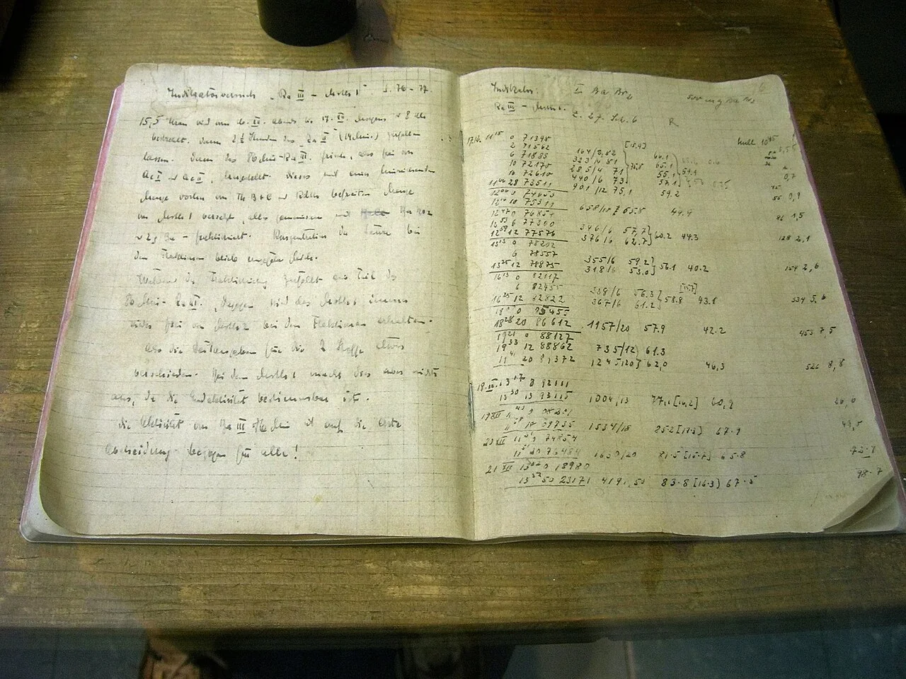
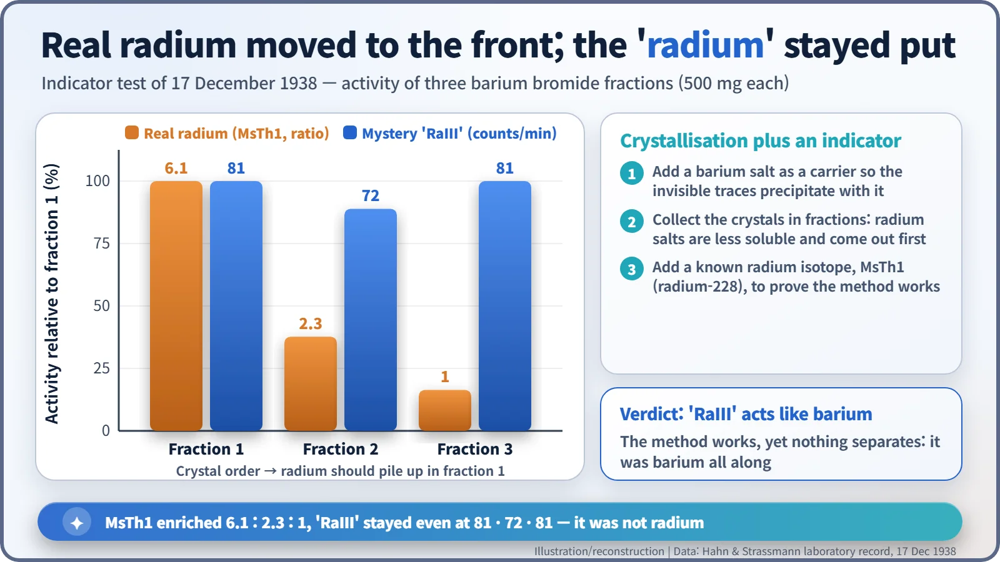
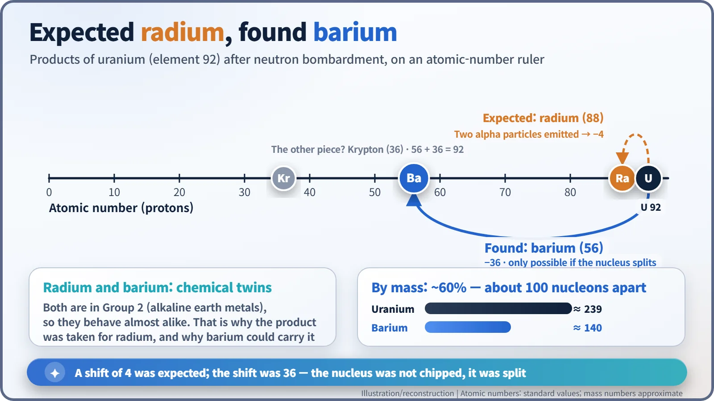
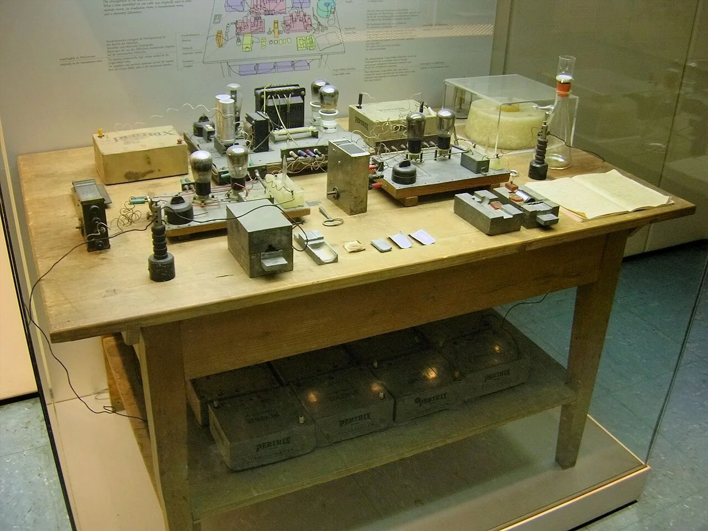

Nuclear History · 061
It Wasn't Radium, It Was Barium — Hahn and Strassmann's Decisive Chemistry (1938)
Precise chemistry in a Berlin laboratory found an element far too light to fit the physics of the day, and the chemists hesitated to say what it meant.
In December 1938, at the Kaiser Wilhelm Institute for Chemistry in Berlin, Otto Hahn and Fritz Strassmann showed that the "radium" they had found in neutron-irradiated uranium could not be separated from barium. Their careful fractional crystallisation and an indicator test on 17 December pointed to an element 36 places below uranium. They wrote to Lise Meitner, submitted their paper on 22 December, and hesitated in print to say what the chemistry was telling them: the nucleus had split.
A page of numbers
In a display case at the Deutsches Museum in Munich lies an open notebook of squared paper. At the top of the left-hand page, in German handwriting, is the heading "Indikatorversuch Ra III – MsTh I" (indicator test, Ra III against mesothorium I), and just below it a note that the sample was irradiated from the evening of 16 December until eight o'clock on the morning of the 17th. The right-hand page is nothing but times and numbers. Ordinary-looking lab notes, but the conclusion hiding in those numbers was anything but ordinary: a uranium nucleus had broken in two.

Four years on the wrong trail
From 1934 onwards, most laboratories in Europe believed that firing neutrons at uranium produced new elements heavier than uranium, the so-called transuranium elements. At the Kaiser Wilhelm Institute for Chemistry in Berlin-Dahlem, three people were chasing these products: the radiochemist Otto Hahn (1879–1968), the physicist Lise Meitner (1878–1968) and the analytical chemist Fritz Strassmann (1902–1980). In July 1938 Meitner fled Nazi Germany, and the two chemists carried on alone in Berlin.
That September, Irène Joliot-Curie and Pavle Savić in Paris reported a substance with a half-life of about 3.5 hours that behaved chemically like lanthanum. Hahn first dismissed it as contamination; Strassmann wanted to repeat the work. Soon the pair found four products that looked like radium, labelled Ra I to Ra IV. The story was that uranium (element 92) had captured a neutron and thrown out two alpha particles, landing on radium (element 88). Meitner shook her head: that a single slow neutron could knock out two alpha particles was very hard to believe. [5]
How to separate chemical twins
The products existed only in invisible traces. To handle them, the chemists added a generous amount of a barium salt and let it precipitate, sweeping the traces along with it. A helper substance used this way is called a carrier. Barium worked because radium and barium sit in the same column of the periodic table, the alkaline earth metals, and behave almost like twins.
The next step was to pull the twins apart again, using fractional crystallisation. Radium salts are slightly less soluble than barium salts, so if you let crystals form in stages, the first crops are richer in radium. Marie Curie had used this very technique to concentrate radium nearly four decades earlier.
But however hard they tried, the "radium" would not come away from the barium. Wondering whether the method itself was failing, Hahn and Strassmann added a genuine, well-known radium isotope, mesothorium 1 (radium-228), and fractionated again. This is an indicator test: if the real radium behaves as expected, the method is sound.

The result on 17 December was unmistakable. In three fractions of 500 mg each, the real radium was enriched towards the front in the ratio 6.1 : 2.3 : 1. The method worked. The mystery "Ra III", by contrast, gave 81, 72 and 81 counts per minute, essentially an even spread. The laboratory record concludes (in translation): "Ra III therefore behaves in this experiment, too, not like the added radium indicator MsTh1 but like ordinary barium." In a further "round-trip" test, another sample was converted through a series of different compounds and back again, and for 14 days it tracked barium exactly. [6]

Why was this so shocking? Every nuclear reaction known at the time moved an element just one or two places in the periodic table. Barium is 36 places below uranium. Its mass is only about 60 per cent of uranium's, which meant something like 100 nucleons had to leave the nucleus at once. Hahn later recalled that barium was an answer "prohibited by the physicists". [2]
Letters in December, a hesitant paper
On 19 December Hahn wrote to Meitner in Stockholm that the "radium isotopes" behaved like barium, and added (in translation): "Perhaps you can suggest some fantastic explanation." In a letter two days later he wrote that they could not keep their results quiet, "even if they are perhaps physically absurd." On that same day, 21 December, Meitner replied that the assumption of such a far-reaching break-up "seems very difficult" to her, though one could not simply call it impossible. [6]
Hahn and Strassmann did not wait for her answer. On 22 December they sent their manuscript to the German journal Die Naturwissenschaften, which printed it on 6 January 1939. [1] Its conclusion is frank about their hesitation. In translation from the German: "As chemists we would actually have to rename the scheme given above and put the symbols Ba, La, Ce in place of Ra, Ac, Th. As 'nuclear chemists' with a certain closeness to physics, we cannot yet bring ourselves to take this leap, which contradicts all previous experience in nuclear physics."
Chemistry had given its answer; the physical explanation was the missing piece. That gap would be filled around Christmas in Sweden by Meitner and her nephew, Otto Robert Frisch.
The truth about the museum table
The Deutsches Museum also displays a wooden work table carrying real instruments from the institute: a paraffin block, a Geiger–Müller counter, batteries and a suction flask among them. It is, however, a reconstruction. The equipment was originally spread over several rooms and was later gathered onto one table by a colleague of Hahn. [4] For more than 30 years the exhibit was presented as "Otto Hahn's work table", with Strassmann mentioned only in passing and Meitner not at all. Only in the early 1990s was it revised to credit all three, and today it is called the Hahn–Meitner–Strassmann table. [3]

Strassmann deserves a final word. He refused to join the Nazi Party and paid for it in his career, and during the war he and his wife hid a Jewish musician in their flat. In 1985 Yad Vashem recognised him posthumously as one of the Righteous Among the Nations. [7] Behind the precise chemistry that overturned the physicists' common sense stood this meticulous analytical chemist.